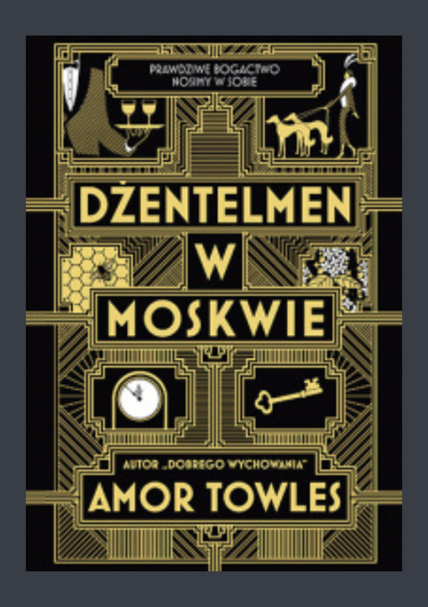

Amor Towles
Amor Towles – amerykański pisarz.
Jego powieść "Dobre wychowanie", która ukazała się w 2011 r., została uznana przez The Wall Street Journal za jedną z dziesięciu najważniejszych książek beletrystycznych wydanych w 2011 i trafiła na listy bestsellerów.
Dobre wychowanie
„Wspaniała powieść o życiu na Manhattanie w czasach wielkiego kryzysu”. – The Wall Street Journal”
„Tętniąca życiem, pełna czułości i błyskotliwych obserwacji historia młodej sekretarki z Brooklynu, która trafia do towarzystwa modnej młodzieży z wyższych sfer na Manhattanie lat 30”. – The New York Times Book Review
Dżentelmen w Moskwie
Dżentelmen w Moskwie to przede wszystkim hołd złożony drugiemu człowiekowi. Powieść uznana została za jedną z najlepszych książek 2016 roku przez najważniejsze media anglosaskie. Od dnia premiery ciągle znajduje się na liście bestsellerów „New York Timesa”.
Lincoln Highway
„Przepięknie napisana”. – „Washington Post”
„Urzekająca odyseja”. – „People”
„Lincoln Highway Amora Towlesa to szalona podróż przez całe Stany, wypełniona niezapomnianymi postaciami, zapadającymi w pamięć sceneriami i suspensem. Od tej powieści nie będziecie mogli się od oderwać”. – „Time”
Wywiad z autorem
Rozmowa Jeffa Glora (CBS Saturday Morning) z Amorem Towlesem z 22 kwietnia 2022 r.